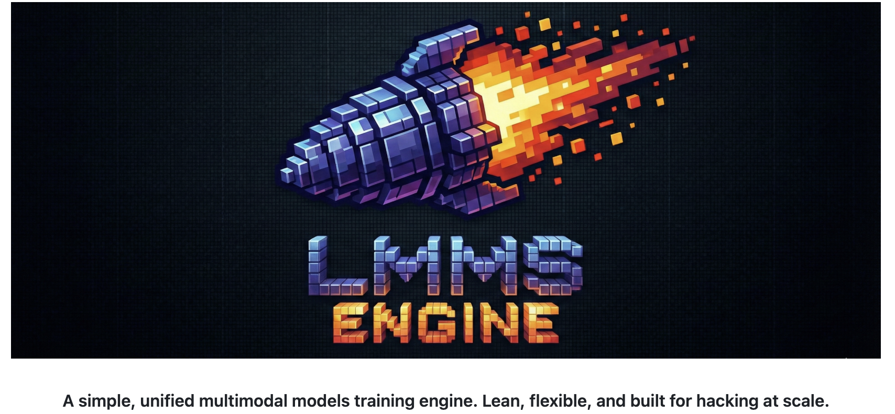
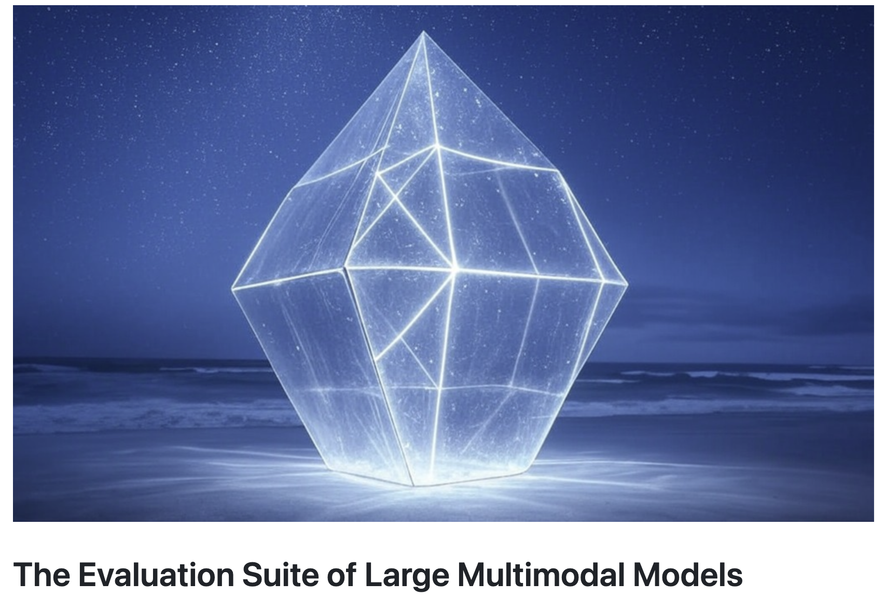

Keming Wu
吴科明About
I am a Ph.D. student at the School of Software, Tsinghua University. My research centers on advancing Multimodal Large Language Models (MLLMs) through Reinforcement Learning (RL), Agentic RL, Reward Modeling, and Visual Generation & World Modeling.
Specifically, I am interested in how multimodal foundation models can move beyond passive perception and static generation toward active reasoning, tool use, verifiable feedback, and physical world understanding—closing the loop between multimodal post-training, human-aligned reward signals, and generative world modeling.
Research Thread
Connecting MLLMs, RL, Agentic Reasoning, Rewards & World ModelingMy work follows a unified trajectory: building agentic multimodal models that reason and act through RL, grounded by human-aligned reward models & benchmarks, and connected to controllable visual generation & world modeling.
Multimodal Post-Training & Agentic RL
Designing open and effective post-training recipes for MLLMs—spanning SFT-to-RL pre-alignment via on-policy distillation, native and parallel tool calling over long videos, and spatio-temporal cue gating for streaming video understanding.
Reward Modeling & Agentic Evaluation
RL and post-training are bounded by the fidelity of their rewards and verifiers. I build human-aligned reward models, think-before-scoring video evaluators, world-state reasoning benchmarks, and automated testbeds for deep-research & coding agents.
Visual Generation & World Modeling
Advancing controllable Diffusion Transformers across fine-grained layouts, article-level visual text, and transparent multi-layer synthesis—and charting the evolution from atomic visual mapping toward agentic world modeling.
News
- 2026.09 Four papers got accepted by NeurIPS 2026: WorldReasonBench (First Author), ParaVT, Beyond SFT-to-RL, and TaskGround!
- 2026.08 Released StreamOPD, a post-training recipe with spatio-temporal cue gating for streaming video understanding.
- 2026.05 VideoScore2 got accepted by TMLR 2026; released WorldReasonBench, ParaVT, and our perspective paper Visual Generation in the New Era.
- 2026.02 Two papers got accepted by CVPR 2026: OpenMMReasoner (Co-First, 🏆 HF Daily Papers #1) and LongVT (🏆 HF Daily Papers #2).
- 2026.01 Two papers got accepted by ICLR 2026: EditReward (First Author) and ImagenWorld; released DeepResearchEval.
- 2025.08 One paper got accepted by ACM MM 2025 Brave New Ideas Track (Oral).
- 2025.06 HybridLayout (First Author) got accepted by ICCV 2025.
- 2025.05 One paper got accepted by ICML 2025; released PrismLayers (Co-First Author).
- 2025.02 BizGen got accepted by CVPR 2025.
- 2024.10 One first-author paper got accepted by IEEE TSMC: Systems (CCF-B).
- 2024.07 RSC-SNN (Co-First Author) got accepted by ACM MM 2024.
- 2024.01 One first-author paper got accepted by Information Sciences (CCF-B).
Publications
* Equal contribution · Full list on Google ScholarMultimodal Post-Training, RL & Agentic Reasoning
MLLMs · On-Policy Distillation · Tool-Use & Streaming Video RL-
OpenMMReasoner: Pushing the Frontiers for Multimodal Reasoning with an Open and General Recipe
-
StreamOPD: A Post-Training Recipe with Spatio-Temporal Cue Gating for Streaming Video Understanding
-
ParaVT: Taming the Tool Prior Paradox for Parallel Tool Use in Agentic Video Reinforcement Learning
-
Beyond SFT-to-RL: Pre-alignment via Black-Box On-Policy Distillation for Multimodal RL
-
TaskGround: Structured Executable Task Inference for Full-Scene Household Reasoning
-
LongVT: Incentivizing “Thinking with Long Videos” via Native Tool Calling
Reward Modeling, Evaluation & Agentic Benchmarks
Human-Aligned Rewards · World-State & Agentic Stress Testing-
WorldReasonBench: Human-Aligned Stress Testing of Video Generators as Future World-State Predictors
-
EditReward: A Human-Aligned Reward Model for Instruction-Guided Image Editing
-
ImagenWorld: Stress-Testing Image Generation Models with Explainable Human Evaluation on Open-ended Real-World Tasks
-
VideoScore2: Think before You Score in Generative Video Evaluation
-
DeepResearchEval: An Automated Framework for Deep Research Task Construction and Agentic Evaluation
-
A Rigorous Benchmark with Multidimensional Evaluation for Deep Research Agents: From Answers to Reports
-
WideSWE: Can Coding Agents Coordinate Changes Across Repositories?
Controllable Visual Generation & World Modeling
Diffusion Transformers · Multi-Layer Synthesis · Agentic World Models-
Visual Generation in the New Era: An Evolution from Atomic Mapping to Agentic World Modeling
-
Hybrid Layout Control for Diffusion Transformer: Fewer Annotations, Superior Aesthetics
-
PrismLayers: Open Data for High-Quality Multi-Layer Transparent Image Generative Models
-
BizGen: Advancing Article-level Visual Text Rendering for Infographics Generation
Earlier & Other Publications
Spiking Neural Networks · Scientific AI · Uncertainty Modeling-
Modeling All-Atom Glycan Structures via Hierarchical Message Passing and Multi-Scale Pre-training
-
Physics-Informed Representation Alignment for Sparse Radio-Map Reconstruction
-
RSC-SNN: Exploring the Trade-off Between Adversarial Robustness and Accuracy in Spiking Neural Networks via Randomized Smoothing Coding
-
A Fractal-based Complex Belief Entropy for Uncertainty Measure in Complex Evidence Theory
-
A Novel Quantum Belief Entropy for Uncertainty Measure in Complex Evidence Theory
Open-Source Projects

LMMs-Engine

A simple, unified, and extensible multimodal models training engine—lean, flexible, and built for scaling large multimodal post-training.
github.com/EvolvingLMMs-Lab/lmms-engine →
LMMs-Eval

A comprehensive evaluation framework for large multimodal models (LMMs), supporting standardized benchmarks across text, image, video, and audio tasks.
github.com/EvolvingLMMs-Lab/lmms-eval →Education, Honors & Service
Tsinghua University
Honors & Awards
- National Scholarship (Three times, 2022–2024)
Professional Service
- Conference Reviewer: CVPR 2027, ICLR 2027, NeurIPS 2026, ECCV 2026, CVPR 2026, ICLR 2026
- Journal Reviewer